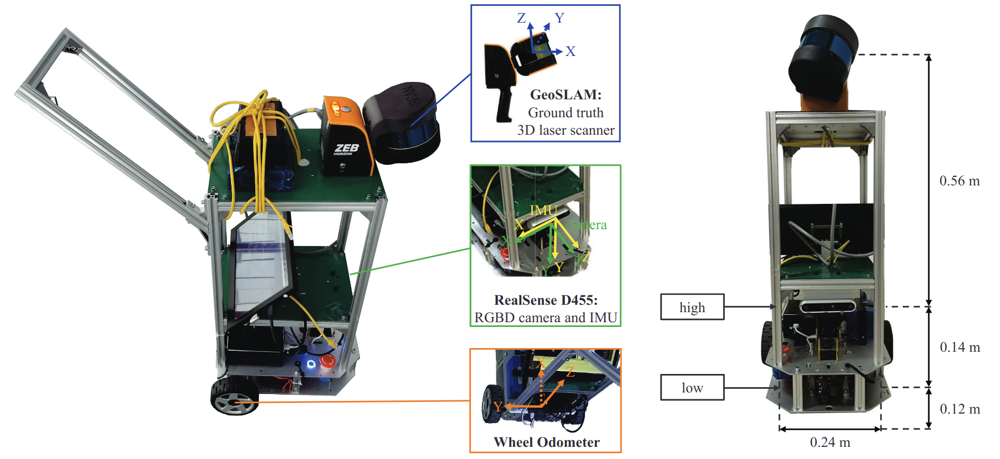
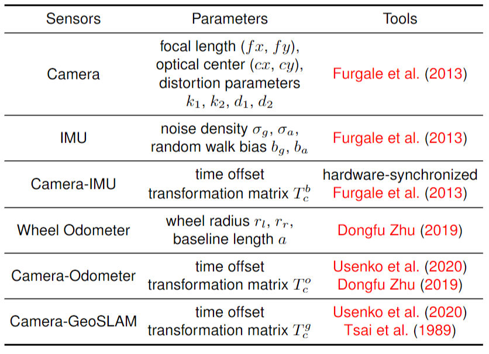

Setup
We design a ground wheeled robot equipped with an RGBD-IW (an RGBD camera, an IMU and a wheel odometer) sensor suite for data acquisition. In order to obtain ground truth trajectories and 3D point cloud models, a high- precision external 3D laser scanner called GeoSLAM is fixed on the top layer of the robot. Figure 2 illustrates the robot setup and the geometric relation among the RGBD camera, the IMU, the wheel odometer and the GeoSLAM. The handle on the robot is convenient for collecting data by different people.
RGBD camera
The Intel RealSense Depth Camera D455 is chosen as the RGBD camera. A global shutter camera is used to capture color images. Active Infrared (IR) Stereo Vision Technology is employed to generate depth measurements. The ideal depth range is 0.6 to 6 meters from the image plane, and the error is less than 2% within 4 meters. The RealSense D455 can provide aligned color and depth image data with a resolution of 640 × 480 pixels at the rate of 30 fps, where the unit of depth is a millimeter.
IMU
The RealSense D455 integrates an IMU (Bosch BMI055) to provide 3-axis accelerometer measurements and 3-axis gyroscope measurements at 200 Hz. The resolution of accelerometer and the gyroscope are 0.98 mg and 0.004 ◦/s and the noise density are 150 μg/√Hz and 0.014 ◦/s/√Hz, respectively. The cameras and IMU sensors are strictly time- synchronized in hardware and their coordinate systems are pre-aligned as well.
Wheel Odometer
The WHEELTEC R550 (DIFF) PLUS supports the movement of our data acquisition equipment. Two differential wheels are mounted on a common axis (baseline), each with a GMR high precision encoder providing local angular rate readings, through which we can solve for the linear velocities and angular velocities at the center of the baseline.
3D Laser Scanner
We first use GeoSLAM ZEB Horizon , a handheld 3D LiDAR scanner with powerful offline SLAM technology, to generate precise ground truth trajectories and dense point cloud models for large-scale indoor environments. The 16- line lasers of GeoSLAM can collect 300,000 points per second. With an effective range of 100 meters, GeoSLAM provides dense 3D scanning with a relative accuracy of up to 6 millimeters dependant on the environment. GeoSLAM provides trajectories at 100Hz, which are in the same coordinate system as the corresponding 3D point cloud model. Figure 3 shows an example of the z-axis coordinates changing over time in a long trajectory. Taking advantage of the fact that the robot moves on the ground, the z-axis coordinates varying within 0.008 meters on average reflects the validity and precision of ground truths in our dataset
Calibration
Our benchmark provides accurate intrinsic and extrinsic parameters calibration and time synchronization for different sensors and the 3D laser scanner. All parameters are reported in calibration.yaml.
Acknowledgement
-
[1] Furgale P, Rehder J and Siegwart R (2013) Unified temporal and spatial calibration for multi-sensor systems. In: 2013 IEEE/RSJ International Conference on Intelligent Robots and Systems. pp. 1280–1286. DOI:10.1109/IROS.2013.6696514.
[2] Dongfu Zhu ZC (2019) Calibrate the internel parameters and extrin- sec parameters between camera and odometer. https://github.com/MegviiRobot/CamOdomCalibraTool
[3] Usenko V, Demmel N, Schubert D, Stueckler J and Cremers D (2020) Visual-inertial mapping with non-linear factor recovery. IEEE Robotics and Automation Letters (RA-L) & Int. Conference on Intelligent Robotics and Automation (ICRA) 5(2): 422–429. DOI:10.1109/LRA.2019.2961227.
[4] Tsai RY, Lenz RK et al. (1989) A new technique for fully autonomous and efficient 3 d robotics hand/eye calibration. IEEE Transactions on robotics and automation 5(3): 345–358.